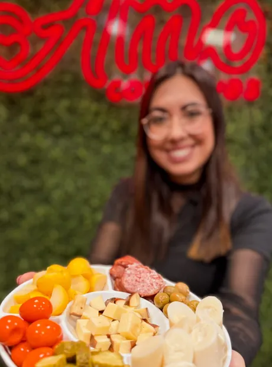

Conservas com o nosso rótulo e uma loja cheia de sabor
Geleias coloniais, legumes, beterraba agridoce e defumados da linha Amo. E, na loja do Petrópolis, vinhos, embutidos e frios para montar a sua tábua.
- 4,9 no Google · 186 avaliações
- Petrópolis, Joinville

Na prateleira, o rótulo xadrez é nosso
Cada vidro da linha Amo leva o mesmo rótulo e a mesma assinatura: qualidade que apaixona.

Geleias coloniais
Uva, tangerina, frutas vermelhas, laranja e amora. 400 g
Legumes em conserva
Pepino, couve-flor e cenoura. 300 g drenados

Beterraba agridoce, até no vidro de 3,1 kg
Para a sua casa, para o seu mercado e para o seu restaurante. O vidrão traz 3,1 kg de peso líquido, e o rótulo é o mesmo de sempre.


Tudo para montar a sua tábua
Conservas Amo, embutidos, frios e vinhos no mesmo balcão. Monte a tábua do fim de semana numa parada só, ou peça a tabela e combine pelo WhatsApp.
Um passeio pela loja
Além da linha Amo, a loja revende outras marcas que você também encontra no balcão.


Traga seus vidros vazios e ganhe desconto
Uma campanha da casa: o vidro volta para a loja, você ganha desconto e ajuda o meio ambiente. Pergunte pelo WhatsApp como funciona.

Seis anos de Amo
A loja comemorou cinco anos com mesa farta, e o sexto com balão dourado embaixo do neon. Hoje são cerca de 13 mil pessoas acompanhando no Instagram e nota 4,9 no Google, em 186 avaliações.
Passe na loja, ou peça pelo WhatsApp
| Segunda a sexta | 9h às 12h e 14h às 18h |
|---|---|
| Sábado | 9h às 12h |
- (47) 99633-1583 · WhatsApp
- (47) 3429-2273
- @amo.conservas no Instagram